RAID&地牢轮换
| 序号 | 突袭 | 地牢 |
|---|---|---|
| 1 | 最后一愿 | 破碎王座 |
| 2 | 救赎花园 | 异端深渊 |
| 3 | 深岩墓室 | 预言 |
| 4 | 玻璃拱顶 | 贪婪之握 |
| 5 | 门徒誓约 | 二象性 |
| 6 | 国王的陨落 | 守望者尖塔 |
| 7 | 梦魇根源 | 深渊机灵 |
| 8 | 克洛塔的末日 | 战争领主的废墟 |
| 9 | 救赎的边缘 | 晚星之主 |
| 10 | 分离教义 |
扭曲星球轮换
欧洲无人区 → 幽梦之城 → 王座世界 → 月球 → 木卫二 → 涅索斯 → 发射基地 → 回到开头
| 时段 | 周一 | 周二 | 周三 | 周四 | 周五 | 周六 | 周天 |
|---|---|---|---|---|---|---|---|
| 00:00-01:00 | 欧洲无人区 | 月球 | 发射基地 | 王座世界 | 涅索斯 | 幽梦之城 | 木卫二 |
| 01:00-02:00 | 幽梦之城 | 木卫二 | 欧洲无人区 | 月球 | 发射基地 | 王座世界 | 涅索斯 |
| 02:00-03:00 | 王座世界 | 涅索斯 | 幽梦之城 | 木卫二 | 欧洲无人区 | 月球 | 发射基地 |
| 03:00-04:00 | 月球 | 发射基地 | 王座世界 | 涅索斯 | 幽梦之城 | 木卫二 | 欧洲无人区 |
| 04:00-05:00 | 木卫二 | 欧洲无人区 | 月球 | 发射基地 | 王座世界 | 涅索斯 | 幽梦之城 |
| 05:00-06:00 | 涅索斯 | 幽梦之城 | 木卫二 | 欧洲无人区 | 月球 | 发射基地 | 王座世界 |
| 06:00-07:00 | 发射基地 | 王座世界 | 涅索斯 | 幽梦之城 | 木卫二 | 欧洲无人区 | 月球 |
| 07:00-08:00 | 欧洲无人区 | 月球 | 发射基地 | 王座世界 | 涅索斯 | 幽梦之城 | 木卫二 |
| 08:00-09:00 | 幽梦之城 | 木卫二 | 欧洲无人区 | 月球 | 发射基地 | 王座世界 | 涅索斯 |
| 09:00-10:00 | 王座世界 | 涅索斯 | 幽梦之城 | 木卫二 | 欧洲无人区 | 月球 | 发射基地 |
| 10:00-11:00 | 月球 | 发射基地 | 王座世界 | 涅索斯 | 幽梦之城 | 木卫二 | 欧洲无人区 |
| 11:00-12:00 | 木卫二 | 欧洲无人区 | 月球 | 发射基地 | 王座世界 | 涅索斯 | 幽梦之城 |
| 12:00-13:00 | 涅索斯 | 幽梦之城 | 木卫二 | 欧洲无人区 | 月球 | 发射基地 | 王座世界 |
| 13:00-14:00 | 发射基地 | 王座世界 | 涅索斯 | 幽梦之城 | 木卫二 | 欧洲无人区 | 月球 |
| 14:00-15:00 | 欧洲无人区 | 月球 | 发射基地 | 王座世界 | 涅索斯 | 幽梦之城 | 木卫二 |
| 15:00-16:00 | 幽梦之城 | 木卫二 | 欧洲无人区 | 月球 | 发射基地 | 王座世界 | 涅索斯 |
| 16:00-17:00 | 王座世界 | 涅索斯 | 幽梦之城 | 木卫二 | 欧洲无人区 | 月球 | 发射基地 |
| 17:00-18:00 | 月球 | 发射基地 | 王座世界 | 涅索斯 | 幽梦之城 | 木卫二 | 欧洲无人区 |
| 18:00-19:00 | 木卫二 | 欧洲无人区 | 月球 | 发射基地 | 王座世界 | 涅索斯 | 幽梦之城 |
| 19:00-20:00 | 涅索斯 | 幽梦之城 | 木卫二 | 欧洲无人区 | 月球 | 发射基地 | 王座世界 |
| 20:00-21:00 | 发射基地 | 王座世界 | 涅索斯 | 幽梦之城 | 木卫二 | 欧洲无人区 | 月球 |
| 21:00-22:00 | 欧洲无人区 | 月球 | 发射基地 | 王座世界 | 涅索斯 | 幽梦之城 | 木卫二 |
| 22:00-23:00 | 幽梦之城 | 木卫二 | 欧洲无人区 | 月球 | 发射基地 | 王座世界 | 涅索斯 |
| 23:00-24:00 | 王座世界 | 涅索斯 | 幽梦之城 | 木卫二 | 欧洲无人区 | 月球 | 发射基地 |
扭曲每小时换一个目的地，一周 168 个时段的顺序固定不变。表内当前时段一整行、今天一整列跟随本机时钟高亮，两条的交点即此刻所在，整点自动跳到下一格。
幽梦之城
| 诅咒阶段（每周） | 佩特拉位置 | 盲目之井首领 | 周常剧情任务 |
|---|---|---|---|
| 弱诅咒 | 滨岸 | 嗤魅 · 希卡利斯、瓦尔库瑞斯 | 破碎信使 |
| 中诅咒 | 迪瓦里安迷雾 | 邪魔族 · 克拉古尔 | 神谕引擎 |
| 强诅咒 | 雷亚希尔维亚 | 傀儡 · 伊诺米纳 | 黑暗修道院 |
| 上维挑战（每周） | 挑战入口 | 对应诅咒 |
|---|---|---|
| 权威深渊 | 溺亡之愿海湾 | 弱诅咒 |
| 辛梅里安卫戍营 | 星光大殿 | 中诅咒 |
| 衔尾蛇 | 远日点之栖 | 强诅咒 |
| 失却神殿 | 艾希拉花园 | 弱诅咒 |
| 破碎废墟 | 克蕾丝脊柱 | 中诅咒 |
| 锋刃要塞 | 预言者隐所 | 强诅咒 |
内欧姆那
| 终端过载武器（每日） | 武器框架 | 刷新区域 |
|---|---|---|
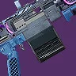 环形逻辑 | 缚丝 · 机枪 | 和风广场 |
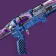 固定低音 | 虚空 · 霰弹枪 | 非暴力公园 |
| 共时轮盘 | 缚丝 · 微型冲锋枪 | 莱明港 |
| Vex 侵占区（每周） | 分区任务 |
|---|---|
| 和风广场 | 后门 |
| 非暴力公园 | 弹药 |
| 莱明港 | 硬重置 |
| 光陨之秋每周战役任务 |
|---|
| 铤而走险 |
| 初次接触 |
| 败落 |
| 极速快感 |
| 时日无多 |
月球
| 悲叹祭坛武器（每日） | 武器框架 | 关底首领 |
|---|---|---|
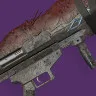 异教徒 | 电弧 · 火箭发射器 | “门神”磁特轮的梦魇 |
| 动能 · 霰弹枪 | “不羁者”弗苟斯的梦魇 | |
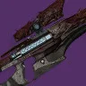 变节者 | 电弧 · 狙击步枪 | “伤疤”坦尼克斯的梦魇 |
| 游荡梦魇首领（每周） | 刷新区域 |
|---|---|
| 希乌阿拉斯之爪，贾克斯的梦魇 | 地狱深渊 |
| 堕落议会 | 弓手界线 |
| 克洛塔之誓，修托尔的梦魇 | 悲伤港口 |
| 米瑟拉克斯之惧，霍基斯的梦魇 | 光能之锚 |
王座世界
| 泉源掉落武器（每日） | 武器框架 | 攻防模式 | 关底首领 |
|---|---|---|---|
| 咒骂 | 电弧 · 榴弹发射器 | 防御 | 夺光魔维祖尔 |
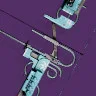 恶魔谎言 | 动能 · 战斗弓箭 | 攻击 | 泉源典狱官博尔冈 |
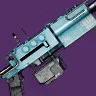 父之罪孽 | 虚空 · 狙击步枪 | 防御 | 夺光魔泽里克 |
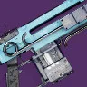 实现 | 电弧 · 自动步枪 | 攻击 | 泉源典狱官戈尔马格 |
木卫二
| 日蚀区域（每周） | Exo 挑战 | 帝国狩猎首领 |
|---|---|---|
| 薄暮废墟 | 模拟：生存 | 暗影女祭司 · 克里迪斯 |
| 卡德马斯山脊 | 模拟：安保 | 技术专家 · 普拉克西斯 |
| 猎犬座深渊 | 模拟：敏捷 | 战士 · 菲拉克斯 |
苍白之心
| 颠覆每日匹配区域 |
|---|
| 着陆之地 |
| 僵局之地 |
| 繁盛之地 |
开普勒
| 闻名任务（每周） | 神话任务 |
|---|---|
| 邀请 | 剜凿 |
| 开端 | 充能 |
| 隔离 | 消息 |
永恒挑战
| 传说难度关底首领（每周） | 第一轮遭遇 | 第二轮遭遇 |
|---|---|---|
| 邪魔族 · 克洛塔 | 卡巴尔 | 邪魔族 |
| Vex · 磁特轮 | 邪魔族 | 卡巴尔 |
| 卡巴尔 · 瓦卢斯·陶拉克 | 邪魔族 | 堕落者 |
| 邪魔族 · 克洛塔 | Vex | 卡巴尔 |
| Vex · 磁特轮 | 堕落者 | 邪魔族 |
| 卡巴尔 · 瓦卢斯·陶拉克 | 邪魔族 | Vex |
| 掉落护甲套装（每周） | 掉落传说武器 |
|---|---|
| 狂野狩猎（12 赛季） 散战号角 | 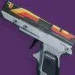 谜之吸引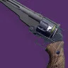 恐怖诺言真实预言 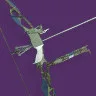 砷毒噬咬-4b崇高追逐 歼 7 步枪 摩擦起火 逃逸速度 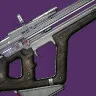 海盗之怒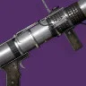 震耳低语爆发赶猎 |
| 执政官（13 赛季） 散战号角 | 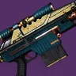 遥远未来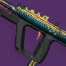 非常演奏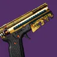 黄铜攻击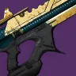 螺纹针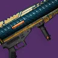 决斗法则滑雪季 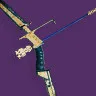 帝国之针牧羊人的注视 红衣威尔 干扰 VI 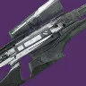 遥远古墓荣誉利刃 |
| 光族（14 赛季） 散战号角 | 炫彩突袭 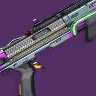 旅居者的故事愿望使者 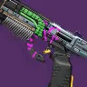 告别最后一支舞 最终的沉沦 主原料 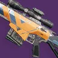 长影沐雨栉风 破碎密码 点火代码 |
| 寻路者（15 赛季） 散战号角 | 碎晶石 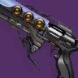 星狐座应急方案 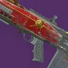 法律诉讼 II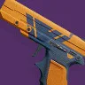 剧透警告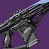 天龙座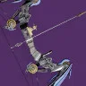 狼音弦钢铁女巫 Z-14 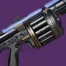 大犬座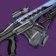 光鳃之调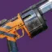 时运无常 |